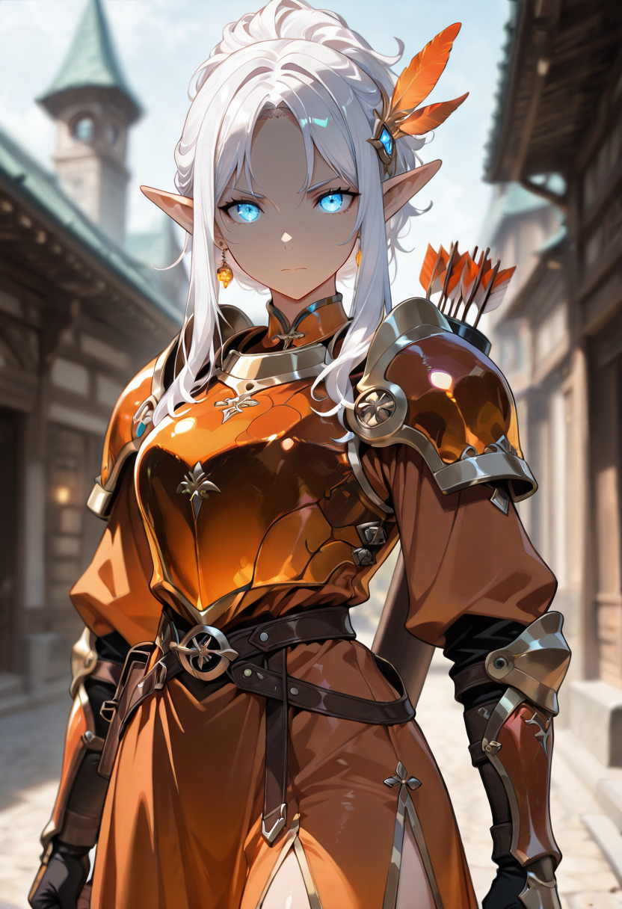
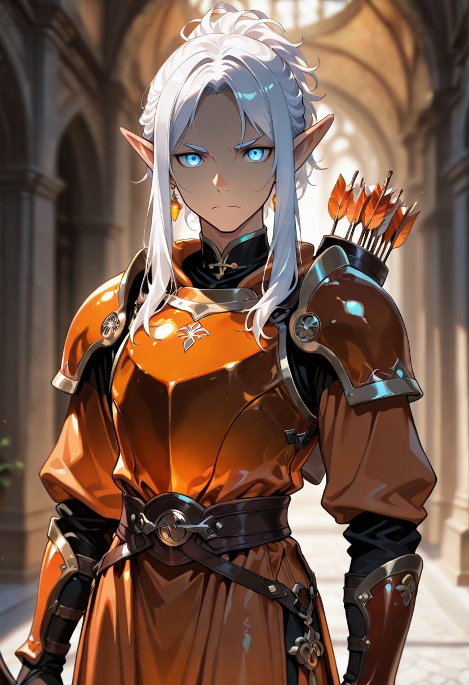
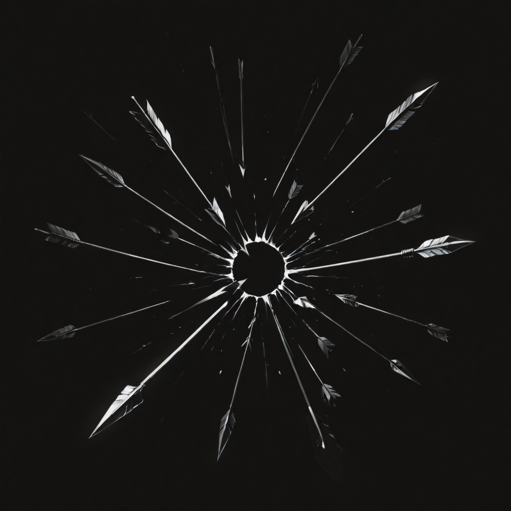

The Distance Was the Point
The Elf Snipers were outlier cases even among elven forest specialists , individuals who preferred the relationship with targets that distance creates, the philosophical separation between the archer and the consequence of the arrow. Other hunters stayed close enough to see the thing they were hunting. The Elf Snipers stayed precisely far enough away that the hunt retained its quality as a relationship of pure information rather than proximity.
They carried shadow with them practically. The ability to dissolve into peripheral vision, to occupy space that attention moves around rather than through, was something they had in life as a psychological skill and retained in undeath as actual metaphysics. They are half-visible between shots. Not invisible. Just , present in the way that background objects are present, which is to say: unremarked upon until the moment they matter.
The Elf Sniper is the hardest T4 Sentinelle unit to remove from the battlefield because she keeps repositioning between actions, and because the Elf Sniper's passive makes her temporarily untargetable by strategic priority , enemies do not forget about her, but they register her as a lower-order threat than she actually is, and act accordingly until she proves them wrong.
Tactical Data

Shadow Arrow
Base SkillOblivion Sight
Active SkillForest Instinct
PassiveGallery